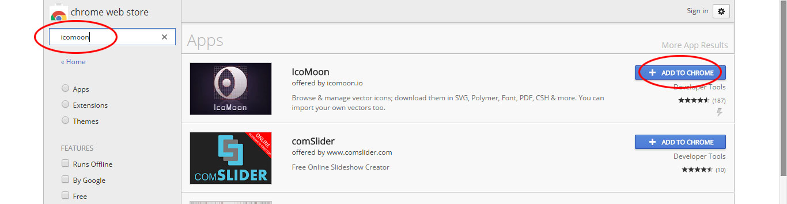
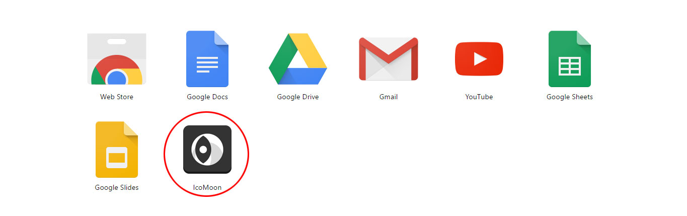
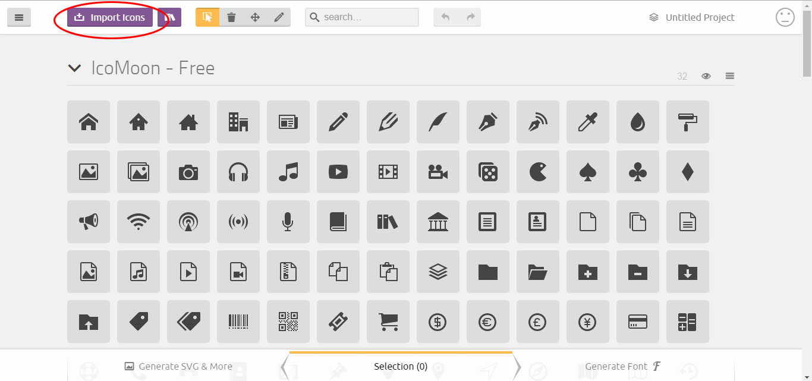
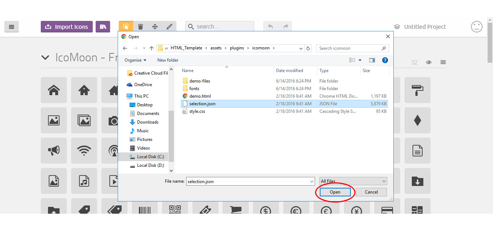
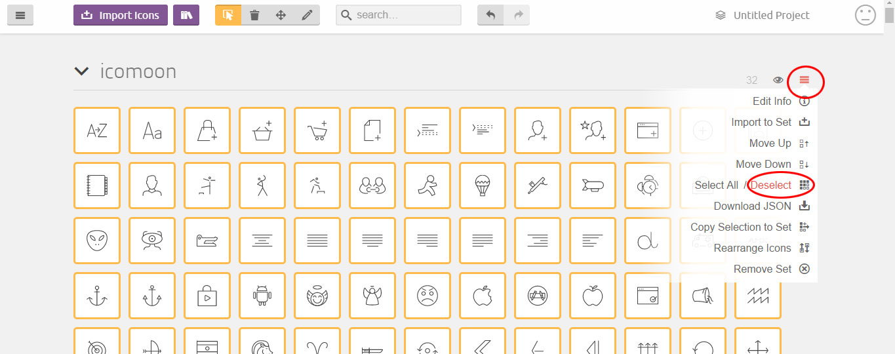
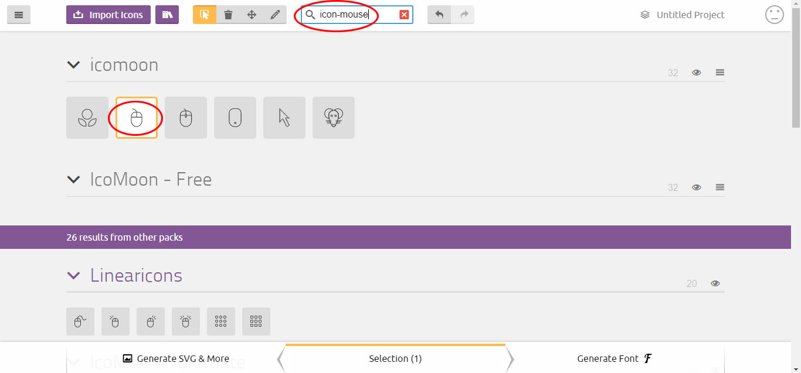
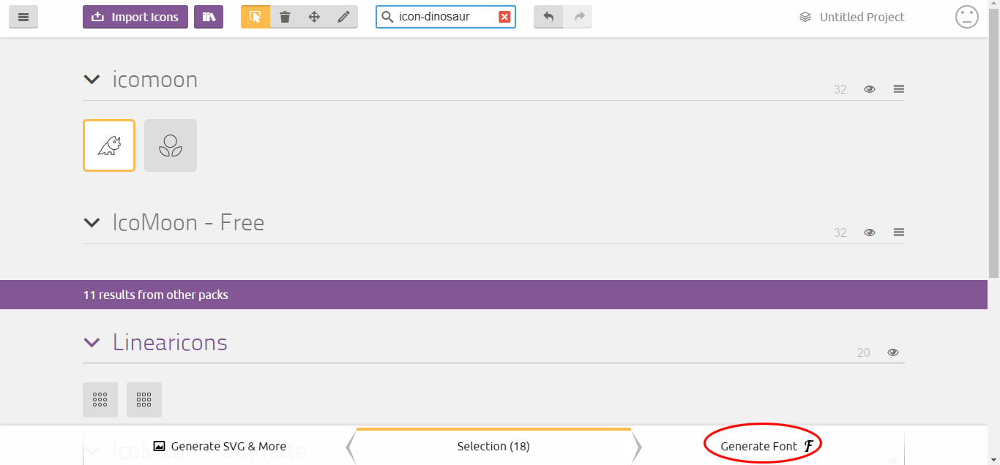
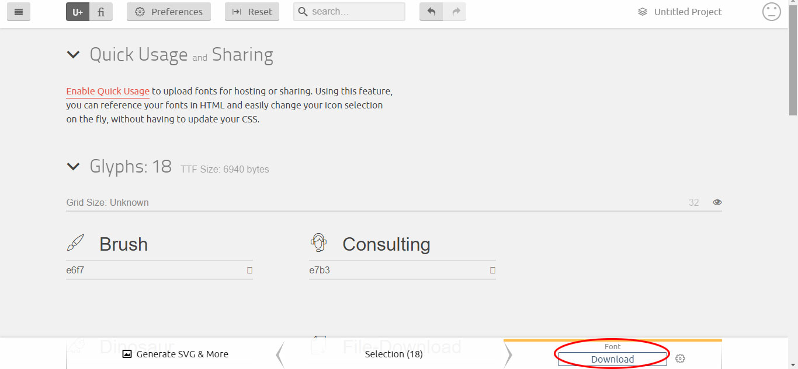
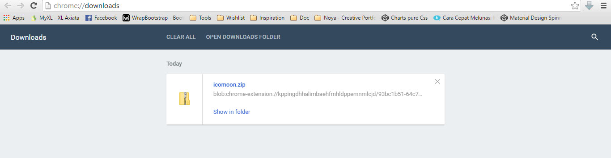

Template Version: 1.0.1
Documentation Version: 1.0
By: etap
Email: etap.soktau@ymail.com
See The Changelog
Dear customers, thank you for choosing our products. Please read the information below if you need support or would like to contact us.
By default, the template loads this color skin, you can choose from 7 color skins.
<!-- BLUE --> <link href="assets/css/colors/blue.css" rel="stylesheet" type="text/css"> <!-- BLUE 2 --> <link href="assets/css/colors/blue2.css" rel="stylesheet" type="text/css"> <!-- GREEN 2 --> <link href="assets/css/colors/green2.css" rel="stylesheet" type="text/css"> <!-- ORANGE --> <link href="assets/css/colors/orange.css" rel="stylesheet" type="text/css"> <!-- ORANGE 2 --> <link href="assets/css/colors/orange2.css" rel="stylesheet" type="text/css"> <!-- PINK --> <link href="assets/css/colors/pink.css" rel="stylesheet" type="text/css"> <!-- PINK 2 --> <link href="assets/css/colors/pink2.css" rel="stylesheet" type="text/css">
In this theme used font icons set from Icons Mind / Icomoon and Font Awesome Icons. In the <head> of your html, reference the location to your font icons style.css.
<!-- Font icons CSS --> <link href="assets/plugins/icomoon/style.css" rel="stylesheet" type="text/css"> <link href="assets/plugins/font-awesome/css/font-awesome.min.css" rel="stylesheet" type="text/css">
You can place font icons just about anywhere using the CSS Prefix icon- and the icon's name (Icons Mind / Icomoon) or CSS Prefix fa- and the icon's name (Font Awesome Icons).
Font icons is designed to be used with inline elements (we like the <i> tag for brevity, but using a <span> is more semantically correct).
<!-- Icons Mind / Icomoon -->
<i class="icon-File-Download"><i>
<i class="icon-Bug"><i>
<!-- Font Awesome Icons -->
<i class="fa fa-facebook"><i>
<i class="fa fa-twitter"><i>
Icons Mind Cheatsheet
Font Awesome Icons Cheatsheet
NOTE: By selecting only the icons that you actually need, you can keep the size of your fonts down.
1. Backup your assets/plugins/icomoon folder.
2. Visit the Chrome Web Store.
3. Find and select IcoMoon's Chrome extension. Click Add to Chrome.
4. Open IcoMoon's Chrome extension.
5. Click Import Icons.
5. Browse and select assets/plugins/icomoon/selection.json.
5. Click Deselect.
6. Browse and search for the icons you need. You can simply click on an icon cell to select or deselect it.
7. Click Generate Font.
8. Click Download.
9. Unzip and replace your assets/plugins/icomoon folder.
WANDA icons list:
// assets/css/styles.css
/*---------------------------------------------------------------------*/
/* Section - Hero
/*---------------------------------------------------------------------*/
.hero {
background-image: url("../images/hero/01.jpg");
}
<!-- index.html -->
<!-- SECTION - PROFILE START -->
<section id="profile" class="section background-gray-light no-padding-bottom">
<!-- SOME CODE -->
<div class="profile">
<div class="profile-image">
<img src="assets/images/profile.jpg" alt="profile image" class="img-responsive"/>
</div>
<!-- //.profile-image -->
</div>
<!-- //.profile -->
<!-- SOME CODE -->
</section>
<!-- //SECTION - PROFILE END -->
<!-- index.html -->
<!-- SECTION - PROFILE START -->
<section id="profile" class="section background-gray-light no-padding-bottom">
<div class="section-content">
<div class="container">
<div class="row">
<!-- SOME CODE -->
</div>
<!-- //.row -->
<div class="row">
<div class="profile-chart margin-9 no-margin-bottom no-margin-rl">
<div class="item col-xs-12 col-sm-3 col-md-3">
<span class="font-family-alt text-uppercase" data-percent="40">Honest</span>
</div>
<!-- //.item -->
<div class="item col-xs-12 col-sm-3 col-md-3">
<span class="font-family-alt text-uppercase" data-percent="30">Optimistic</span>
</div>
<!-- //.item -->
<div class="item col-xs-12 col-sm-3 col-md-3">
<span class="font-family-alt text-uppercase" data-percent="25">Hard Working</span>
</div>
<!-- //.item -->
<div class="item col-xs-12 col-sm-3 col-md-3">
<span class="font-family-alt text-uppercase" data-percent="5">Sensitive</span>
</div>
<!-- //.item -->
</div>
<!-- //.profile-chart -->
</div>
<!-- //.row -->
</div>
<!-- //.container -->
</div>
<!-- //.section-content -->
</section>
<!-- //SECTION - PROFILE END -->
The filter is driven by the Isotope script - http://isotope.metafizzy.co/. Here's an example of usage:
For example, each item element can have several identifying classes:
character-design, digital-art, illustration, painting, etc.
<ul class="font-family-alt list-unstyled text-extra-large text-uppercase">
<li class="active padding-1-5 no-padding-rl">
<a href="#" data-filter="*" class="display-inline-block">All</a>
<li>
<li class="active padding-1-5 no-padding-rl">
<a href="#" data-filter=".character-design" class="display-inline-block">Character Design</a>
<li>
<li class="active padding-1-5 no-padding-rl">
<a href="#" data-filter=".digital-art" class="display-inline-block">Digital Art</a>
<li>
<li class="active padding-1-5 no-padding-rl">
<a href="#" data-filter=".illustration" class="display-inline-block">Illustration</a>
<li>
<li class="active padding-1-5 no-padding-rl">
<a href="#" data-filter=".painting" class="display-inline-block">Painting</a>
<li>
<ul>
<div class="projects background-gray-light width-100">
<div class="item painting">
<!-- SOME CODE -->
</div>
<div class="item digital-art illustration">
<!-- SOME CODE -->
</div>
<div class="item character-design">
<!-- SOME CODE -->
</div>
<div class="item digital-art painting">
<!-- SOME CODE -->
</div>
</div>
Setup a slideshow for the slider to animate automatically:
// assets/js/main.js
$testimonialSlider.flexslider({
controlNav: false,
directionNav : false,
selector: '.slides > .item',
slideshowSpeed: 4000,
slideshow: true // animate automatically
});
Less is a CSS pre-processor, meaning that it extends the CSS language, adding features that allow variables, mixins, functions and many other techniques that allow you to make CSS that is more maintainable, themable and extendable.
Client-side is the easiest way to get started and good for developing with Less, but in production, when performance and reliability is important, we recommend pre-compiling using node.js or one of the many third party tools available.
To start off, link your .less stylesheets with the rel attribute set to "stylesheet/less":
<link href="assets/less/styles.less" rel="stylesheet/less" type="text/css"/>
Next, download less.min.js and include it in a <script></script> tag in the <head> element of your page. Make sure you include your stylesheets before the script.
<link href="assets/less/styles.less" rel="stylesheet/less" type="text/css"/> <script src="assets/plugins/less.min.js" type="text/javascript"></script>
You can find more detailed info about LESS from the official plugin page http://lesscss.org/
The images included in preview are for demonstration purposes and should always be replaced with your own work.
Version 1.0.1 – 28 August 2016
Affected files:
Version 1.0 – 5 August 2016
Once again, thank you so much for purchasing this theme. :D